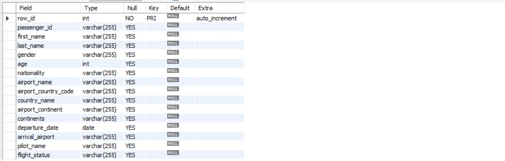
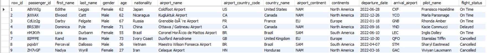
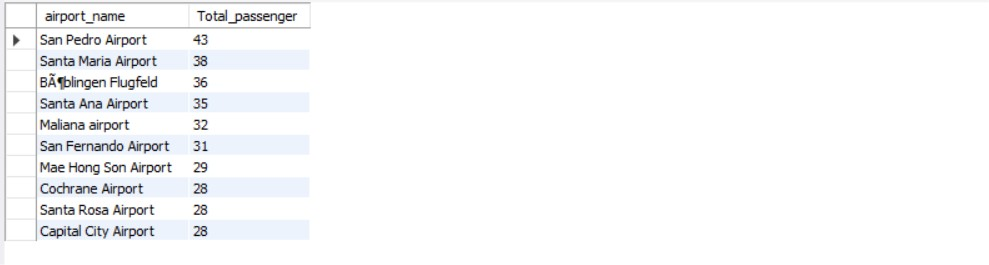

Airline Dataset: Introduction
Airline data plays a crucial role in providing valuable insights into the operational aspects and effectiveness of the aviation sector. Through the analysis of data related to flight delays, cancellations, and punctuality, airlines can pinpoint patterns and implement strategies to enhance their on-time performance and reduce disruptions. Researchers and analysts also rely on airline data to examine market trends, assess environmental impacts, and formulate strategies for sustainable growth within the industry. In summary, airline data serves as the cornerstone for making informed decisions, improving operational efficiency, and advancing the aviation industry as a whole.
Data Preparation and Import
CREATE DATABASE AIRLINE1;
USE AIRLINE1;
-- Data Import preparation
CREATE TABLE airlinedata (
passenger_id VARCHAR (255),
first_name VARCHAR (255),
last_name VARCHAR (255),
gender VARCHAR (255),
age VARCHAR (255),
nationality VARCHAR (255),
airport_name VARCHAR (255),
airport_country_code VARCHAR (255),
country_name VARCHAR (255),
airport_continent VARCHAR (255),
continents VARCHAR (255),
departure_date VARCHAR (255),
arrival_airport VARCHAR (255),
pilot_name VARCHAR (255),
flight_status VARCHAR (255)
);
LOAD DATA LOCAL INFILE 'Airline Dataset Updated - v1.csv'
INTO TABLE airlinedata
FIELDS TERMINATED BY ','
IGNORE 1 LINES;
SHOW GLOBAL VARIABLES LIKE 'local_infile';
SET GLOBAL local_infile = 'ON';
Output:
Data Cleansing and Processing
-- Data Cleaning process
-- Describing the table will give the field type and to determine its key
DESCRIBE airlinedata
-- Add column as primary key
ALTER TABLE airlinedata
ADD COLUMN row_id INT PRIMARY KEY AUTO_INCREMENT FIRST;
-- Set the appropriate field type for each column
ALTER TABLE airlinedata
MODIFY age INT;
UPDATE airlinedata
SET departure_date = date_format(str_to_date(departure_date, '%d/%m/%Y'), '%Y-%m-%d');
ALTER TABLE airlinedata
MODIFY departure_date DATE;
-- Removing dublicates
-- Determine if there are any duplicate in the data
SELECT passenger_id, COUNT(passenger_id)
FROM airlinedata
GROUP BY passenger_id
HAVING COUNT(passenger_id) > 1;
SET AUTOCOMMIT = OFF;
COMMIT;
-- Deleting duplicates
DELETE FROM airlinedata
WHERE row_id IN (
SELECT row_id
FROM (
SELECT *,
ROW_NUMBER() OVER (PARTITION BY passenger_id) AS rn
FROM airlinedata) AS x
WHERE x.rn > 1);
Output:

Exploratory Data Analysis
SELECT * FROM airlinedata;
Output:

I. Passenger Demographics
Total number of passengers
SELECT COUNT(passenger_id) as Total_Passengers
FROM airlinedata;
Output:
Total number of passengers by gender
SELECT gender, COUNT(gender) as Total_passenger
FROM airlinedata
GROUP BY gender;
Output:
Total number of passengers by age
SELECT age,
COUNT(passenger_id) as total_passenger
FROM airlinedata
GROUP BY age
ORDER BY total_passenger DESC
Output:
Distribution of passengers accross nationality
SELECT nationality,
COUNT(passenger_id)/98617 * 100 AS Percentage
FROM airlinedata
GROUP BY nationality
ORDER BY Percentage DESC
LIMIT 10;
Output:
II. Flight Analysis
Top 10 airports with the largest passenger count
SELECT airport_name,
COUNT(passenger_id) as Total_passenger
FROM airlinedata
GROUP BY airport_name
ORDER BY Total_passenger DESC
LIMIT 10;
Output:

Total number of passengers by airport continent
SELECT continents,
COUNT(passenger_id) as Total_passenger
FROM airlinedata
GROUP BY continents
ORDER BY COUNT(passenger_id) DESC;
Output:
Most prevailing flight status
SELECT flight_status,
COUNT(passenger_id)/98617 * 100 as flightstatus_percentage
FROM airlinedata
GROUP BY flight_status
ORDER BY flightstatus_percentage
Output:
Determine the top 3 months of the year has the highest number of passenger
SELECT
EXTRACT(MONTH FROM departure_date) AS MONTH_,
COUNT(passenger_id) AS total_passengers
FROM airlinedata
GROUP BY MONTH_
ORDER BY total_passengers DESC
LIMIT 3;
Output:
Determine the top 3 months of the year has the lowest number of passenger
-- Determine the top 3 months of the year has the lowest number of passenger
SELECT
EXTRACT(MONTH FROM departure_date) AS MONTH_,
COUNT(passenger_id) AS total_passengers
FROM airlinedata
GROUP BY MONTH_
ORDER BY total_passengers
LIMIT 3;
Output:
Conclusion
The analysis of the airline dataset provides valuable insights into various aspects of airline operations and passenger demographics. Here are some key findings
Gender Ratio:
The ratio between genders in nearly equal This indicates a balanced gender representation in airline travel.
Age Distribution:
The wide range of the age distribution of the passengers suggests that people of various age groups use airline services, emphasizing the inclusivity of the industry.
Flight Status:
The dataset shows that there is an almost equal ratio of flights that were cancelled, delayed, or on time. This balance between different flight status indicates a certain level of efficiency in managing flight schedules.
Peak Travel Months:
The analysis highlights that the months of May to August tend to have a high traffic of passengers. This peak in travel can be can be attributed to the summer holidays, during which passengers travlel for vacations and leisure.